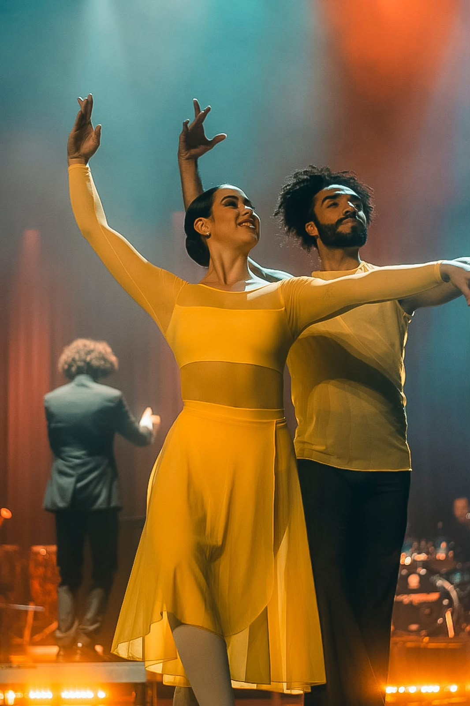
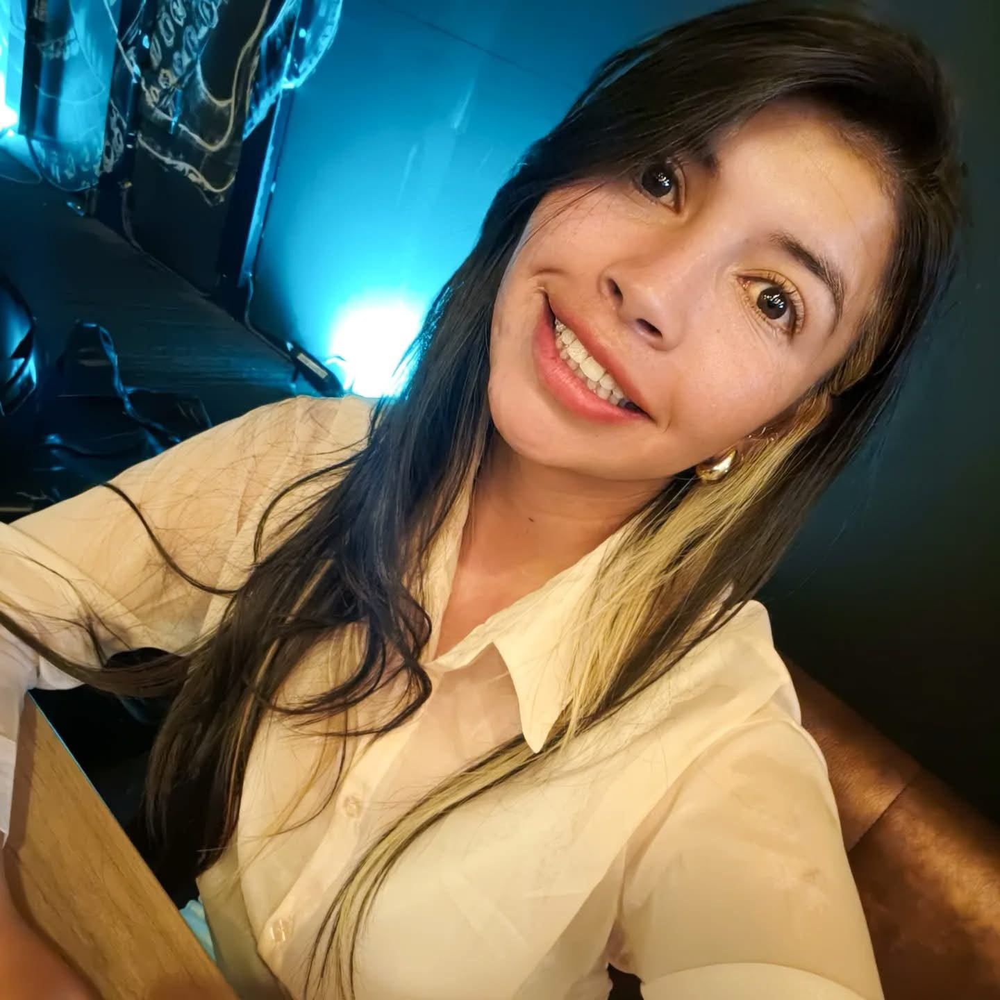
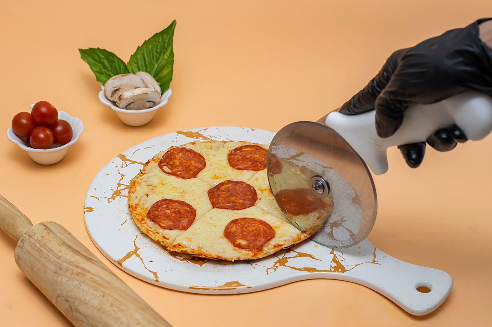
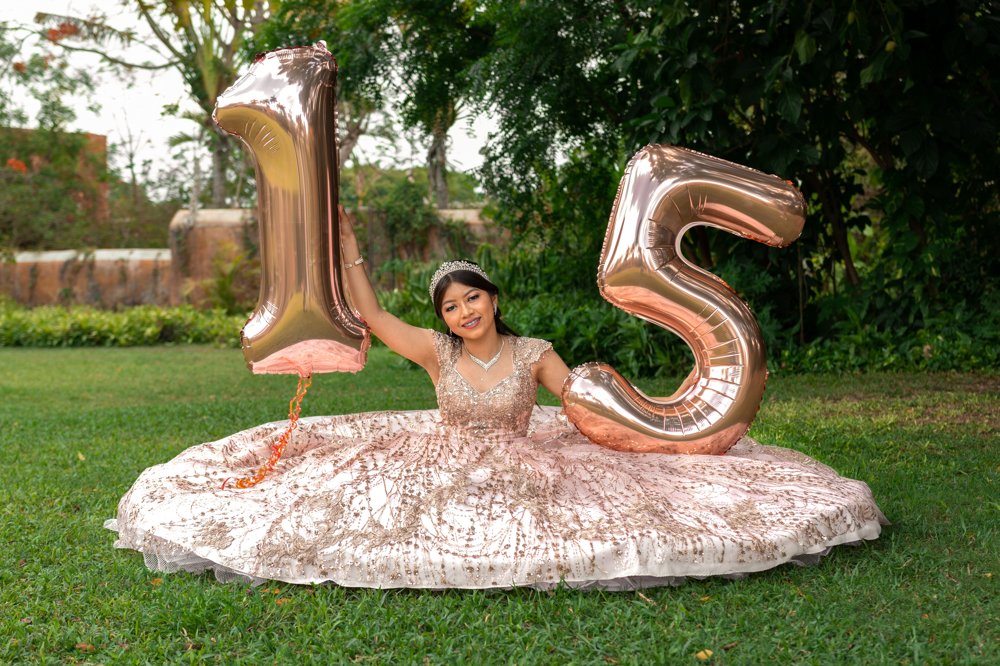
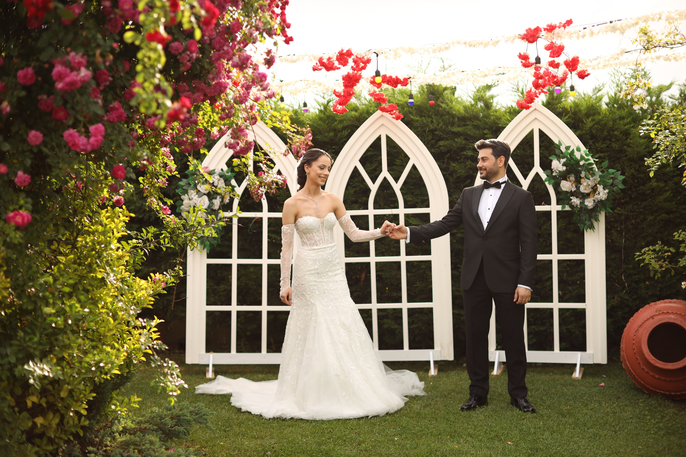

Bienvenidos al escenario detrás de la camara
Me dedico a capturar la esencia de los momentos en su estado más puro. Creo firmemente que la gran fotografía no surge de las poses calculadas, sino de la luz natural, la espontaneidad y las conexiones reales. Mi propósito es transformar instantes fugaces en recuerdos eternos, entregando imágenes con alma que hablen por sí solas y que te permitan revivir cada emoción una y otra vez.
Leer mi historia
Las Colecciones del Portafolio

Restaurantes

Celebraciones

Wending
¿Listo/a para crear una historia juntos?
Reserva ya tu fecha. Diseñemos algo que perdure para siempre.